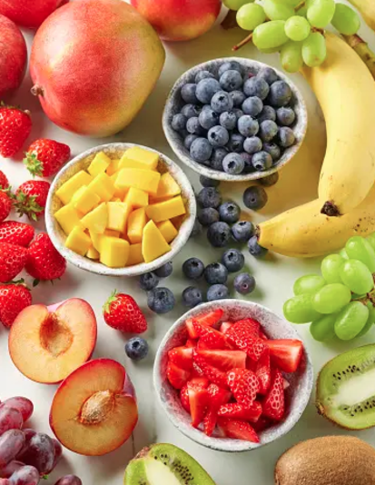

Latest Blog Posts
Filter by Category:
How to Make the Perfect Açaí Bowl
Learn the steps to create the perfect Açaí bowl that will satisfy your cravings and keep you healthy!
Read MoreBenefits of Açaí Berries
Discover the health benefits of Açaí berries and how they can boost your energy and immune system.
Read More

Top 5 Toppings for Your Açaí Bowl
Not sure what to add on your Açaí bowl? Here are the top 5 toppings you must try for the ultimate bowl!
Read More